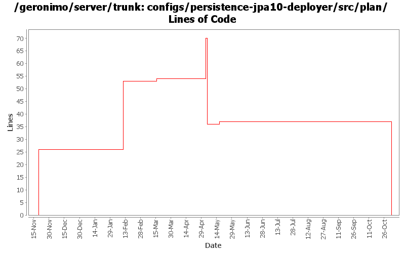

[root]/configs/persistence-jpa10-deployer/src/plan

| Author | Changes | Lines of Code | Lines per Change |
|---|---|---|---|
| Totals | 14 (100.0%) | 82 (100.0%) | 5.8 |
| djencks | 9 (64.3%) | 80 (97.6%) | 8.8 |
| kevan | 3 (21.4%) | 1 (1.2%) | 0.3 |
| jdillon | 1 (7.1%) | 1 (1.2%) | 1.0 |
| prasad | 1 (7.1%) | 0 (0.0%) | 0.0 |
GERONIMO-3565. Configs distributed amongst framework/configs and plugins
0 lines of code changed in 1 file:
Take out some really dangerous jpa defaults
1 lines of code changed in 1 file:
GERONIMO-3270 better technique for setting operation-order
1 lines of code changed in 1 file:
GERONIMO-3272 eliminate the geronimo-transaction-jta11 module, we are entirely on jta11 now. Also refix logging error for non-NamedXAResource. Also make jpa stuff use spec interfaces and not drag ejb spec into the tm
1 lines of code changed in 1 file:
GERONIMO-3132 GERONIMO-3165. Fix a bunch of stuff with locating persistence.xml and persistence unit jars. Hook up with openejb for extended persistence contexts
1 lines of code changed in 1 file:
GERONIMO-3136 Supply persistence framework classes in app client and hook up appropriate deployers.
1 lines of code changed in 1 file:
GERONIMO-3131 GERONIMO-3132 GERONIMO-3133 GERONIMO-3134 Defaults for persistence units. Supply locations of jars with persistent classes to the PersistenceUnitInfo. Match a ref with not persistence unit specified to a unique match. Allow wars to have jndi references pointing to the war module, not just the ear
16 lines of code changed in 1 file:
GERONIMO-2937 compensate for taking openjpa classes out of openejb direct dependencies
6 lines of code changed in 1 file:
Std props
dos2unix on some files with inconsistent newlines
1 lines of code changed in 1 file:
GERONIMO-2454 upgrade xerces/xalan etc, also GERONIMO-2600 fix derby problems, fix persistence unit and ref builder problems in app client
27 lines of code changed in 1 file:
GERONIMO-2657 rename entity-manager-factory-ref to persistence-unit-ref
1 lines of code changed in 1 file:
GERONIMO-2460, GERONIMO-2580 move some builders into better modules
26 lines of code changed in 1 file:
GERONIMO-2537 Update the src headers in the non-module files. They need to be compliant with the new ASF src header and copyright policy (http://www.apache.org/legal/src-headers.html). I also did some cleanup of the src headers and tried to get them in a consistent format
0 lines of code changed in 2 files: